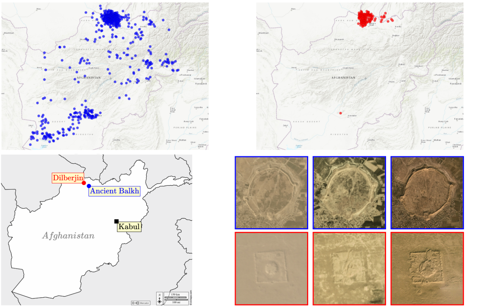
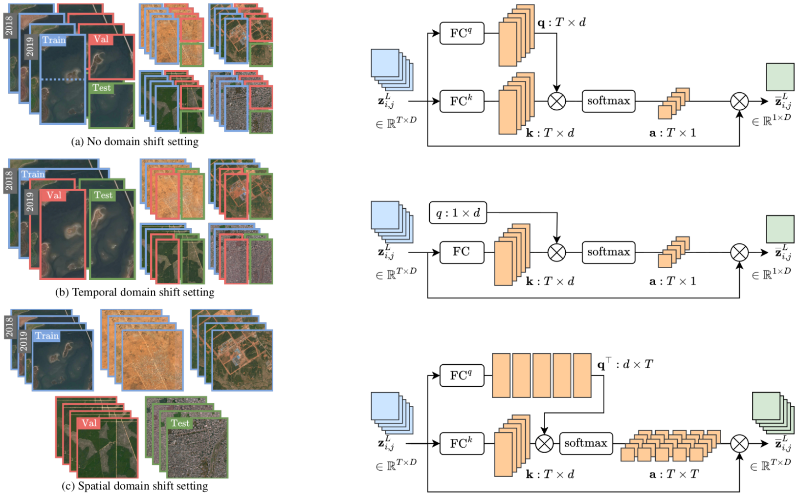
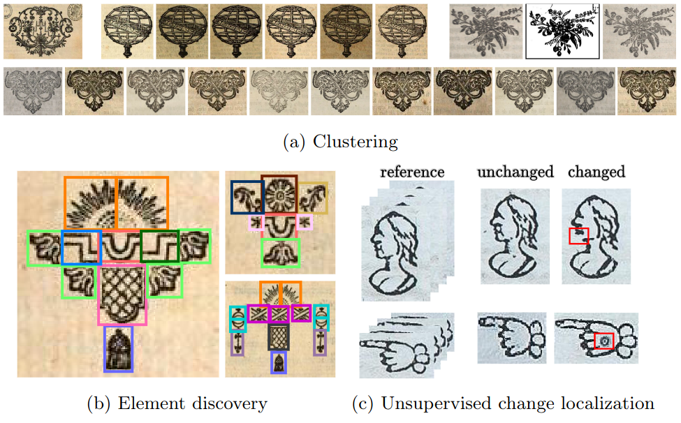
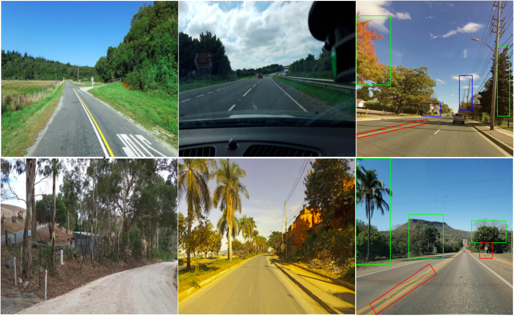
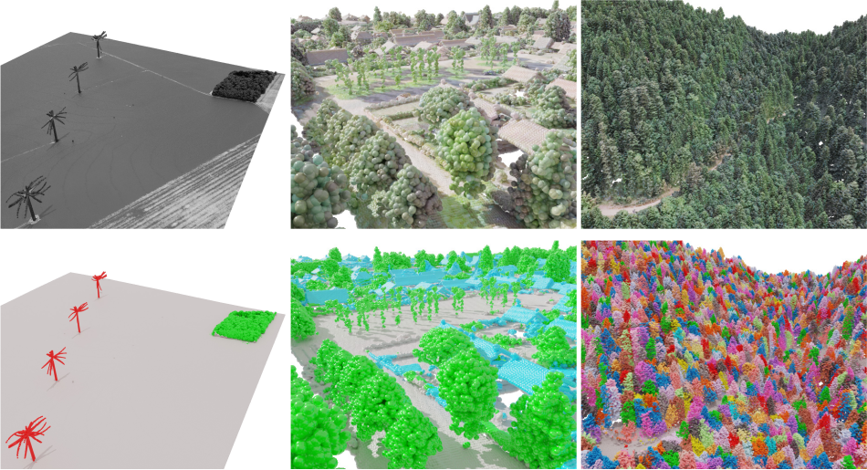
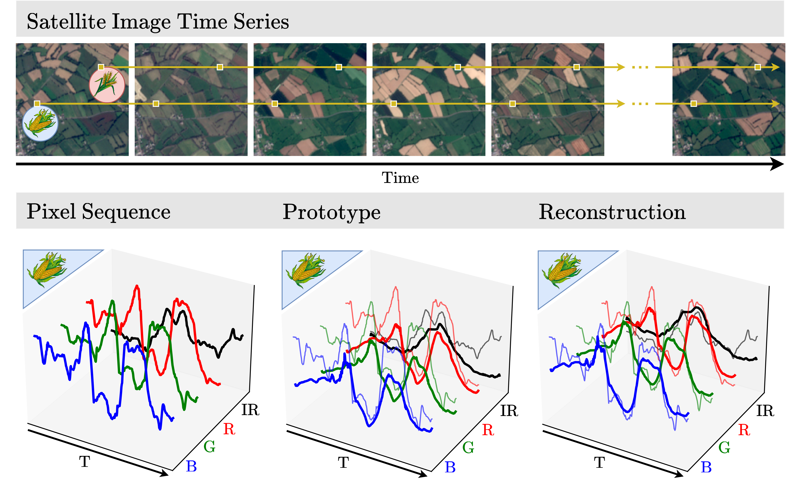
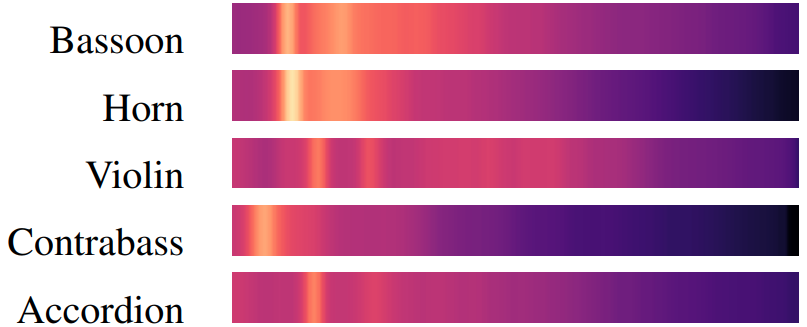
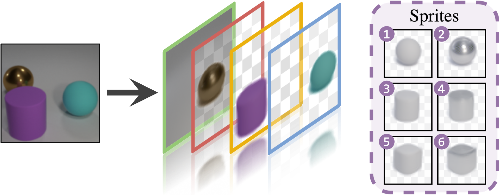
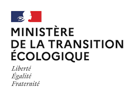
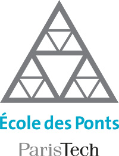

Summary
I am an AI Coordinator at the French National Institute of Geographic and Forest Information (IGN) and researcher at LASTIG, working on change detection for earth observation and deep learning applied to 2D and 3D geospatial data.
I am a finishing PhD student (expected graduation in early 2025) in the Imagine research group at Ecole des Ponts ParisTech and in the Willow team at Inria Paris. My PhD work focused on satellite image time series and their analysis with few or no annotations for tasks such as land use classification or change detection. I worked under the supervision of Mathieu Aubry (LIGM, Ecole des Ponts, Univ Gustave Eiffel, CNRS, France) and Jean Ponce (Inria and DIENS (ENS-PSL, CNRS, Inria) and Center for Data Science, New York University).
My research interests include machine learning and computer vision for remote sensing applications.
I am a finishing PhD student (expected graduation in early 2025) in the Imagine research group at Ecole des Ponts ParisTech and in the Willow team at Inria Paris. My PhD work focused on satellite image time series and their analysis with few or no annotations for tasks such as land use classification or change detection. I worked under the supervision of Mathieu Aubry (LIGM, Ecole des Ponts, Univ Gustave Eiffel, CNRS, France) and Jean Ponce (Inria and DIENS (ENS-PSL, CNRS, Inria) and Center for Data Science, New York University).
My research interests include machine learning and computer vision for remote sensing applications.
Publications

Detecting Looted Archaeological Sites from Satellite Image Time Series
Elliot Vincent, Mehraïl Saroufim, Jonathan Chemla, Yves Ubelmann, Philippe Marquis, Jean Ponce, Mathieu Aubry
arXiv 2024 | Paper
We introduce the DAFA Looted Sites dataset, DAFA-LS, a labeled multi-temporal remote sensing dataset containing 55,480 images acquired monthly over 8 years across 675 Afghan archaeological sites, including 135 sites looted during the acquisition period.
Elliot Vincent, Mehraïl Saroufim, Jonathan Chemla, Yves Ubelmann, Philippe Marquis, Jean Ponce, Mathieu Aubry
arXiv 2024 | Paper
We introduce the DAFA Looted Sites dataset, DAFA-LS, a labeled multi-temporal remote sensing dataset containing 55,480 images acquired monthly over 8 years across 675 Afghan archaeological sites, including 135 sites looted during the acquisition period.

Satellite Image Time Series Semantic Change Detection: Novel Architecture and Analysis of Domain Shift
Elliot Vincent, Jean Ponce, Mathieu Aubry
arXiv 2024 | Paper
We propose a new architecture that improves over the state of the art on the satellite image time series semantic change detection task (SITS-SCD), scales better with the number of parameters, and leverages long-term temporal information. We investigate the impact of temporal and spatial shifts separately on global, multi-year SITS datasets.
Elliot Vincent, Jean Ponce, Mathieu Aubry
arXiv 2024 | Paper
We propose a new architecture that improves over the state of the art on the satellite image time series semantic change detection task (SITS-SCD), scales better with the number of parameters, and leverages long-term temporal information. We investigate the impact of temporal and spatial shifts separately on global, multi-year SITS datasets.

Historical Printed Ornaments: Dataset and Tasks
Sayan K. Chaki, Sonat Baltaci, Elliot Vincent, Rémi Emonet, Fabienne Vial-Bonacci, Christelle Bahier-Porte, Mathieu Aubry, Thierry Fournel
ICDAR 2024 | Paper
We are enhancing historical ornament study using modern computer vision. We focus on three key tasks: clustering, element discovery, and unsupervised change localization. We evaluate top models for each task with new benchmarks.
Sayan K. Chaki, Sonat Baltaci, Elliot Vincent, Rémi Emonet, Fabienne Vial-Bonacci, Christelle Bahier-Porte, Mathieu Aubry, Thierry Fournel
ICDAR 2024 | Paper
We are enhancing historical ornament study using modern computer vision. We focus on three key tasks: clustering, element discovery, and unsupervised change localization. We evaluate top models for each task with new benchmarks.

OpenStreetView-5M: The Many Roads to Global Visual Geolocation
G. Astruc, N. Dufour, I. Siglidis, C. Aronssohn, N. Bouia, S. Fu, R. Loiseau, V. N. Nguyen, C. Raude, Elliot Vincent, L. Xu, H. Zhou, L. Landrieu
CVPR 2024 | Paper
We introduce OpenStreetView-5M, a large-scale, open-access dataset comprising over 5.1 million geo-referenced street view images, covering 225 countries and territories. To demonstrate the utility of our dataset, we conduct an extensive benchmark of various state-of-the-art image encoders, spatial representations, and training strategies.
G. Astruc, N. Dufour, I. Siglidis, C. Aronssohn, N. Bouia, S. Fu, R. Loiseau, V. N. Nguyen, C. Raude, Elliot Vincent, L. Xu, H. Zhou, L. Landrieu
CVPR 2024 | Paper
We introduce OpenStreetView-5M, a large-scale, open-access dataset comprising over 5.1 million geo-referenced street view images, covering 225 countries and territories. To demonstrate the utility of our dataset, we conduct an extensive benchmark of various state-of-the-art image encoders, spatial representations, and training strategies.

Learnable Earth Parser: Discovering 3D Prototypes in Aerial Scans
Romain Loiseau, Elliot Vincent, Mathieu Aubry, Loïc Landrieu
CVPR 2024 | Paper
We propose an unsupervised method for parsing large 3D scans of real-world scenes into interpretable parts. Our goal is to provide a practical tool for analyzing 3D scenes with unique characteristics in the context of aerial surveying and mapping, without relying on user annotations. Our method offers significant advantage over existing approaches.
Romain Loiseau, Elliot Vincent, Mathieu Aubry, Loïc Landrieu
CVPR 2024 | Paper
We propose an unsupervised method for parsing large 3D scans of real-world scenes into interpretable parts. Our goal is to provide a practical tool for analyzing 3D scenes with unique characteristics in the context of aerial surveying and mapping, without relying on user annotations. Our method offers significant advantage over existing approaches.

Pixel-wise Agricultural Image Time Series Classification: Comparisons and a Deformable Prototype-based Approach
Elliot Vincent, Jean Ponce, Mathieu Aubry
arXiv 2023 | Paper
We benchmark multivariate time series classification methods on four satellite image time series dataset and propose a prototype-based approach, adding invariance to spectral deformations and temporal shifts and improving over existing baselines.
Elliot Vincent, Jean Ponce, Mathieu Aubry
arXiv 2023 | Paper
We benchmark multivariate time series classification methods on four satellite image time series dataset and propose a prototype-based approach, adding invariance to spectral deformations and temporal shifts and improving over existing baselines.

A Model You Can Hear: Audio Classification with Playable Prototypes
Romain Loiseau, Baptiste Bouvier, Yann Teytaut, Elliot Vincent, Mathieu Aubry, Loïc Landrieu
CVPR Sight and Sound Workshop 2022 - ISMIR 2022 | Paper
We propose an audio identification model based on learnable spectral prototypes. Our model can be trained with or without supervision and reaches state-of-the-art results for speaker and instrument identification, while remaining easily interpretable.
Romain Loiseau, Baptiste Bouvier, Yann Teytaut, Elliot Vincent, Mathieu Aubry, Loïc Landrieu
CVPR Sight and Sound Workshop 2022 - ISMIR 2022 | Paper
We propose an audio identification model based on learnable spectral prototypes. Our model can be trained with or without supervision and reaches state-of-the-art results for speaker and instrument identification, while remaining easily interpretable.

Unsupervised Layered Image Decomposition into Object Prototypes
Tom Monnier, Elliot Vincent, Jean Ponce, Mathieu Aubry
ICCV 2021 | Paper
An unsupervised learning framework to decompose images into object layers modeled as transformations of learnable sprites.
Tom Monnier, Elliot Vincent, Jean Ponce, Mathieu Aubry
ICCV 2021 | Paper
An unsupervised learning framework to decompose images into object layers modeled as transformations of learnable sprites.
Resume
[2021-2024] PhD in Computer Science, ENPC and Inria, soon to be defended
[Feb-Jul 2021] Project officer at the "Waste collection, Street cleaning and Water" department of Ville de Paris
[2020-2021] Master in Public Policies for Climate Change and Ecological Transition at ENPC and AgroParisTech
[Mar-Aug 2020] Research internship at Imagine and Willow on unsupervised 2D scene decomposition
[2019-2020] Mathematics, Vision and Learning master of the ENS and engineering program of ENPC
[Mar-Aug 2019] Internship at IBM Research Zürich on automated methods for diagram understanding
[2016-2019] Master in Applied Mathematics for Computer Science at École polytechnique
[Feb-Jul 2021] Project officer at the "Waste collection, Street cleaning and Water" department of Ville de Paris
[2020-2021] Master in Public Policies for Climate Change and Ecological Transition at ENPC and AgroParisTech
[Mar-Aug 2020] Research internship at Imagine and Willow on unsupervised 2D scene decomposition
[2019-2020] Mathematics, Vision and Learning master of the ENS and engineering program of ENPC
[Mar-Aug 2019] Internship at IBM Research Zürich on automated methods for diagram understanding
[2016-2019] Master in Applied Mathematics for Computer Science at École polytechnique
About me
In addition to my interest for computer vision and machine learning, I also graduated with a Master's degree in public policies for environmental protection. I love animals of all sorts but have a weird and particular obsession for otters. On my free time, you will see me playing football with friends or enjoying a nice swim at the pool.
Affiliations
- LASTIG, Université Gustave Eiffel, IGN, ENSG,
- LIGM (UMR 8049), Ecole des Ponts, Univ. Gustave Eiffel, CNRS
- Inria and DIENS (ENS-PSL, CNRS, Inria)


- LIGM (UMR 8049), Ecole des Ponts, Univ. Gustave Eiffel, CNRS
- Inria and DIENS (ENS-PSL, CNRS, Inria)